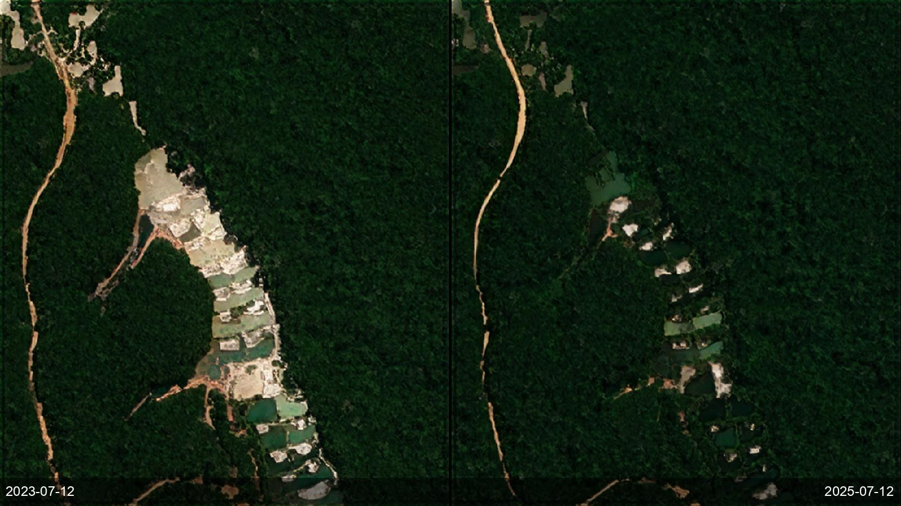
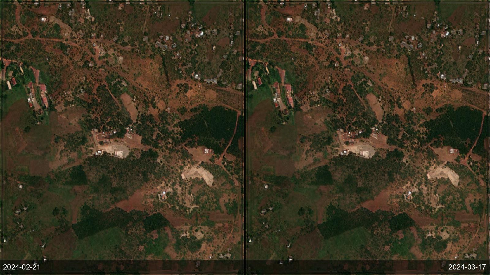
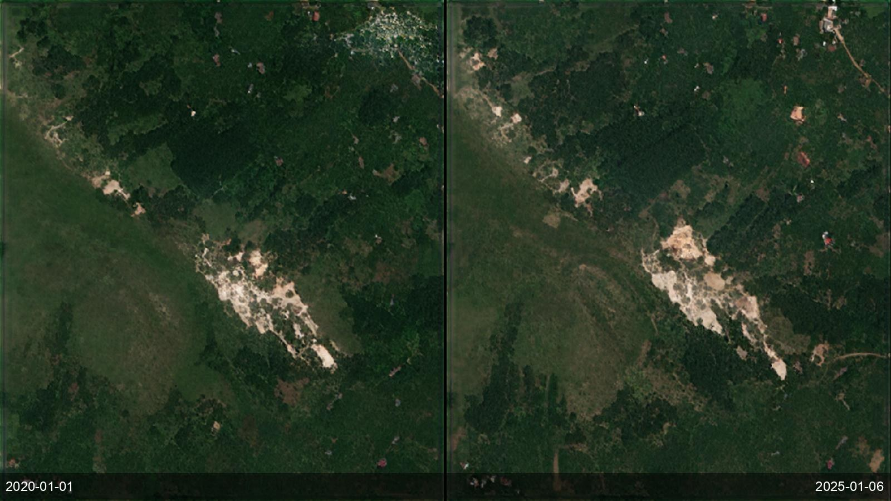

A ministry or environmental regulator has to know where mining is actually happening — including the wildcat and artisanal operations that never file a permit — across territory far too large to patrol. The pain is that these sites are small, dispersed, and constantly moving; by the time a ranger or an audit reaches one, the pit, the tailings pond and the deforestation are already there, and the operators have moved on. The best free alternative, Amazon Mining Watch, is Amazon-only, quarterly, and 480 m — a single pixel covers 23 hectares, so it misses the great majority of sites — while commercial tasking is priced per scene and can't economically blanket a country every few weeks. SkySpera runs 2–4 m multispectral plus 1 m visual weekly-to-monthly anywhere on Earth, classifies each detection into six spectral groups (iron-rich subsoil, carbonate quarry, silicate/quartz, coal, sediment pond, acid drainage), and flags what is new, retired or still active between any two dates. Checked against the Tang & Werner global reference, detection caught 100% of the known sites, with ~85% correct on mining *type* (the false-positive rate has not yet been independently measured). We're not aware of another globally-available service that catches these operations at this resolution and cadence, at country scale, without a tasking queue.


Tell us the ground you need to watch — we'll show you what SkySpera can do with it.
Talk to us